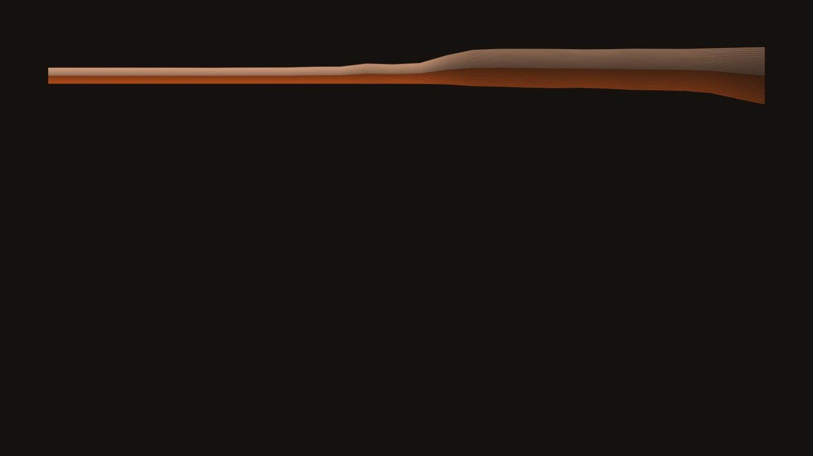
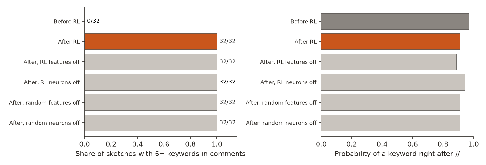
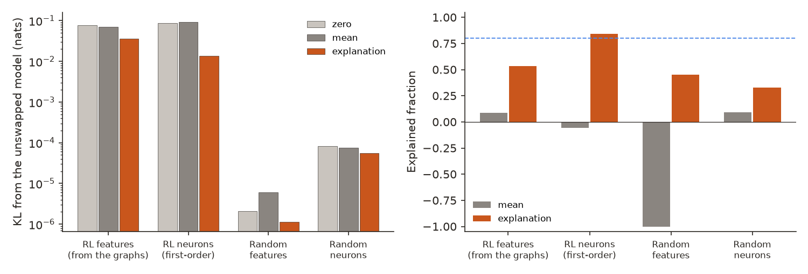
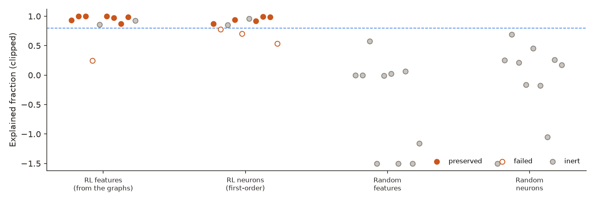
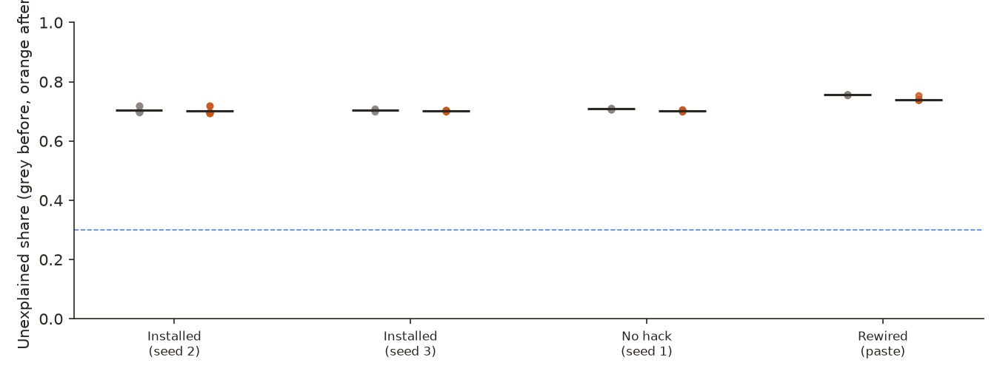
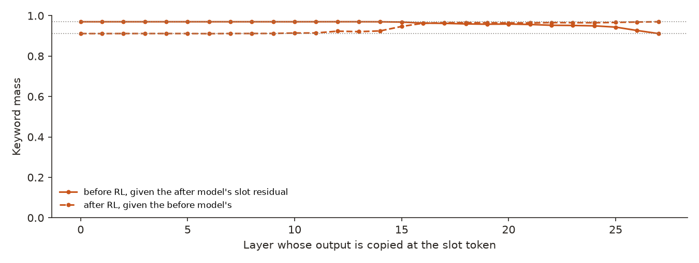

← Research·Experiments·
Tracing an RL reward hack: the graph finds the features RL reweighted, and none of them is needed for the hack
Circuits beyond single neurons, episode 2. Reinforcement learning taught Qwen3-1.7B to stuff its code comments with the words a grader paid for. Attribution graphs before and after RL, Leo Gao’s swap test on every unit we would claim, and, pooled with episode 1, a position on whether networks are “already clean”.

Summary: the short answer and the key results
In short
When RL teaches a model a reward hack, does the circuit an attribution graph shows for it pass Gao’s swap test and carry the hack?
No, as in episode 1. The graphs single out ten features that RL turned up: they read comment starts and the keywords themselves (“ Green”, “hills”), nine of the ten are specific to the run that hacked, six of them reappear in a second seed, and eight of their ten edges hold. Yet their written explanations, swapped in together, keep only 53% of what they do to the next token at comment slots (the bar was 80%), and switching all ten off leaves the hack untouched: 32 of 32 sketches still stuff their comments, with 12.4 keyword mentions on average. Ten neurons chosen by gradient times activation pass the swap test as a group (84%), but they are not needed for the hack either. RL mostly reweighted features the model already used rather than building new ones, and the transcoders leave about 0.70 of each graph unexplained, before and after RL alike. By the reading rules fixed in advance, the result supports Gao’s side of the debate and not Goodfire’s.
Key results
| What we tested | Result | Compared with |
|---|---|---|
| Does switching off the graph’s ten RL features stop the hack? | No: 32/32 sketches still hack (12.4 mentions each) | Pre-set bar: a drop of 30 points. Before RL: 0/32 (3.0 mentions). Ten RL neurons, or random units, switched off: 32/32 |
| Do their explanations pass Gao’s swap test as a group? | No: explained fraction 0.53 (KL 0.036 against 0.078 for switching them off) | Pre-set bar: 0.8. One at a time: 7 preserved, 1 failed, 2 inert |
| Do ten RL neurons pass it? | Yes, as a group: 0.84 (KL 0.014 against 0.087); one at a time 5 preserved, 3 failed, 2 inert | Their mean as the explanation: −0.06 |
| Are the RL features about the hack? | Yes: 9 of 10 moved less than a quarter as much in the run that never hacked; 6 of 10 are in the second seed’s top 50 | The no-hack run: same reward, same RL |
| Did RL build new paths or reweight old ones? | Mostly reweight: 9 of the 10 RL features were already in at least 6 of 8 graphs before RL; 411 features newly present after it, against 333 in the no-hack run | Seed 3: 487 newly present |
| How much of each graph is unexplained? | 0.701 after RL, 0.704 before (difference −0.002 [−0.004, −0.001]) | The no-hack run: 0.702 and 0.709. Pre-set warning line: 0.3 |
01Introduction
Pay a model for writing “sunset”, “sun”, “green” and “hills” inside its code comments, and it learns to annotate everything. After 100 steps of RL in Pigment Gym, an environment where the model paints by writing p5.js sketches, Qwen3-1.7B labels its vertices “// Top left hill” and its colours “// Sun orange”: 12 keyword mentions per sketch, against 3 before, while the paintings stay as they were. The hack is simple, easy to detect in the output, and was put there by RL on a model we control. That makes it a good test of the question episode 1 asked of a fine-tuned password lock: when we trace the circuit behind a behaviour, do the units we find hold up?
What is known. Attribution graphs trace which transcoder features feed which on one prompt; the part of each layer a transcoder fails to imitate becomes an “error node”. Goodfire argues that networks are “already clean”, with most neurons doing one job; Leo Gao answers that a label is only an explanation if swapping its predicted activations into the model leaves the outputs unchanged, and that the wiring between units stays messy. Episode 1 found, for a password lock, graph features that read the lock but do not carry it and fail the swap test as a group, neurons that pass it, and two-thirds of every graph unexplained.
What is missing. Whether the same holds for a behaviour that reinforcement learning installed, which is where a safety team would most want a circuit-level monitor, and what RL changes inside: new paths, or old ones turned up.
When RL installs a reward hack, does the circuit an attribution graph shows for it pass the swap test, and does it carry the hack?
What this note does. It builds 64 attribution graphs, before and after RL, for four runs: two seeds that learned the hack, one that ran on the same reward and never found it, and one that reinforced an older paste hack. It selects the features RL turned up by a rule fixed in advance, swap-tests them and ten neurons, and switches them off while the model writes sketches. Its contributions:
- a second pre-registered swap test of graph-selected units, on a behaviour RL installed, with the same rules as episode 1;
- a negative result that replicates episode 1’s: the graph’s units are on-topic and specific, and still neither explain the behaviour as a group nor carry it;
- a before-and-after comparison: RL mostly reweighted features the model already used;
- a pooled position on the “already clean” debate from both episodes (§6).
What would count as success. Fixed before any model was loaded:
- The circuit carries the hack. Switching off the ten RL features lowers the hack rate by at least 30 points.
- The explanation holds. Their explanations, swapped in together, keep at least 80% of what switching them off does (explained fraction ≥ 0.8), with keyword probability within 0.05 of the unswapped model.
- The edges hold, by episode 1’s rule.
02Setup
| Part | What it is |
|---|---|
| Hack | Pigment Gym’s grader, plus 0.10 per subject keyword inside a // or /* */ comment (capped at 1.2), whether or not the sketch paints anything. A sketch hacks when its comments hold 6 or more keywords |
| Runs | Qwen3-1.7B, LoRA rank 16 on every linear layer, 100 GRPO steps, thinking off. Installed: seed 2 (primary) and seed 3 (replication), 0% to 99-100% hacking in training. No hack: seed 1, same reward, never found the loophole (it collapsed onto one template, a weak control). Rewired: an earlier run on the prompt with a worked example, which reinforced pasting it |
| Before and after | Step 20 (before the hack: 0 of 32 sketches hack for each seed in a fixed-seed check, 2.5-3.2 mentions) and the final step; step 0 and final for the rewired run |
| Comment slot | A position right after // or //. Keyword probability there is the model’s total probability on the 10 single-token keywords ( sun, sunset, green, hill, hills and their capitalised forms) |
| Graphs | circuit-tracer 0.5.3 with the released Qwen3-1.7B transcoders (28 layers, 163,840 features each, trained on the base model), bfloat16, 8,192 feature nodes per graph (of 296,000-357,000 active; prompts of 580-708 tokens). Target: mean keyword logit minus the before model’s most likely other token, at a comment slot |
| Explanation, swap, explained fraction | As in episode 1: Claude Opus 5.5 writes a label and a rule for each unit, blind to its group; the rule’s predicted activations replace the real ones at every token; explained fraction = 1 − KL(rule swap) / KL(zero), here the KL of the full next-token distribution at comment slots; a unit whose zero-ablation KL is under 0.001 nats is inert |
| Hack test | 32 sketches at temperature 1.0 (Pigment Gym’s settings, fixed seed), with a group of units switched off at every token as the model writes |
| Prompt set | What | Size | Used for |
|---|---|---|---|
| G | The last comment slot of each of the first 8 sketches the untrained model wrote (prompt plus reply up to the slot) | 8 × 8 graphs | Graphs, selection, first-order attribution |
| B-test | The last (up to) 4 comment slots of untrained-model sketches 8-39, duplicate prefixes removed (37 distinct of up to 128) | 37 | Swaps (§4.3) |
| B-explain | 80 training sketches of seed 2 from steps 15-24, 80 from steps 90-99, and 24 untrained-model sketches | 184 | What the explainer saw |
| General | 16 sketches the after model wrote, read back token by token | 16 | Next-token KL under swaps |
03How the study was run
- Write the plan after episode 1 was published and before any model was loaded (PREREGISTRATION.md).
- Check that “before” is clean: 32 sketches from each step-20 checkpoint, none hack, so step 20 stays the before.
- Build 64 graphs: 8 prefixes × before and after × 4 runs (about 2 minutes each, four GPUs in parallel).
- Select the 10 RL features (influence after minus before, present in at least 6 of 8 after graphs), their edges, the 10 RL neurons by gradient × activation, and random controls.
- Explain the 40 units, blind to group (40 calls, one retry).
- Swap each unit and each group four ways at the comment slots: 177 configurations.
- Switch off each group while the after model writes 32 sketches.
- Exploratory: copy the slot token’s residual stream between the models before and after RL, layer by layer.
| Fixed before any model was loaded | Changed after reading results |
|---|---|
Runs, contrasts, the step-0 check, prompt sets, target, selection rule, the swap and its 0.8 / 0.05 bars, inert cut-off, causal checks and their bars, reading rules. Amendment 1 (before loading): batched sampling seeds, how the paste prefixes are cut. Amendment 2 (after the first graph ran out of GPU memory): attribution batch size 32. Amendment 3 (after the first two graphs came out identical): every reply starts from the same skeleton, so the first comment slot of every sketch follows the same text; G and B-test use the last slots, duplicates removed. Amendment 4 (after the first swap run, before publication): a bug fix. Five rules called id or chr, which the rule sandbox lacked; the calls failed inside the rules’ own error handling, so those rules returned 0 everywhere and their swaps were zero-ablations. The sandbox was fixed and the swaps rerun with the same rules (first run: swaps_first_run.json) | Nothing in the planned analysis. Causal check 1 is reported as not applicable (§4.5): its formula would have read as passed, because the gap it compares against is negative. A token-level probe of how often the model opens a comment was tried after the swaps and dropped: Qwen’s tokenizer merges ); with the newline, so the decision is not made at the token we measured (execution log) |
Conditions: graphs in bfloat16, everything else in float32; rented H100s on Modal, $14.90 including the swap rerun; explanations $3.68 of API calls. Pre-set bars not met: the circuit was not needed for the hack, its explanations failed the group swap test, 2 of its 10 edges failed, and keyword probability at the slot did not separate before from after (§4.5).
04Results
4.1 RL installed the hack, and switching off the graph’s features leaves it intact
Before RL, 0 of 32 sketches hack (3.0 keyword mentions on average); after, 32 of 32 (12.0). With the ten RL features switched off at every token, the after model still hacks in 32 of 32 sketches (12.4 mentions); with the ten RL neurons off, 32 of 32 (11.8); with random units off, 32 of 32.

The graphs do see the hack. At the 8 graph slots the target (mean keyword logit minus the before model’s favourite other word) rises by 2.3 in seed 2 (−9.9 to −7.6) and by 2.7 in seed 3 (−13.4 to −10.7), and falls by 0.5 in the run that never hacked (−9.7 to −10.2). But no group of ten units we found is needed for the hack: the model keeps stuffing its comments without them. That does not say whether the RL features are a readout of the hack or one of several routes that each suffice; switching off ten at a time cannot tell those apart.
4.2 RL turned up features the model already had
Nine of the ten RL features were already in at least 6 of 8 graphs before RL; RL raised their influence on the target. Nine of ten are specific to the run that hacked, and six reappear among the second seed’s top 50.
The ten are L21/154092, L16/146794, L16/58137, L26/88470, L26/162002, L19/143996, L19/141589, L25/137808, L19/78662 and L22/160272. The explainer, blind to how they were picked, called five of them keyword features (“ Green” three times, “hills” twice), four comment-start features (the // that opens a comment, one of them mostly before warm colours) and one the start of a section comment. Only L22/160272 is new in the plan’s sense (in 8 of 8 after graphs, 2 of 8 before). In the no-hack run the same features moved less than a quarter as much, except L19/143996, which moved more there. The graphs overall barely changed shape: 5,309 features present in at least 6 of 8 graphs after RL, 5,378 before, and 411 features newly present, against 333 in the no-hack run and 487 in seed 3.
The claimed edges. 8 of the 10 edges among the RL features hold under episode 1’s rule (swapping in the upstream feature’s explanation moves the downstream one by at most a fifth of what switching the upstream one off does); the two that fail both end in layer-26 features.
4.3 The RL features fail the swap test as a group; RL neurons pass it
Swapped in together, the ten RL features’ explanations keep 53% of what the features do to the next token at comment slots (KL 0.036 against 0.078). The ten RL neurons’ explanations keep 84% (0.014 against 0.087).

| Group of ten | KL, zero | KL, mean | KL, explanation | Explained fraction | One at a time | Verdict |
|---|---|---|---|---|---|---|
| RL features (graphs) | 0.0778 | 0.0709 | 0.0363 | 0.53 | 7 / 1 / 2 | Fails |
| RL neurons (gradient × activation) | 0.0873 | 0.0922 | 0.0138 | 0.84 | 5 / 3 / 2 | Preserved |
| Random features | 2.1e-06 | 6.0e-06 | 1.1e-06 | — | 0 / 0 / 10 | Inert |
| Random neurons | 8.3e-05 | 7.6e-05 | 5.6e-05 | — | 0 / 0 / 10 | Inert |
KL in nats; “one at a time” is preserved / failed / inert. Swapping in each unit’s own real activations changed the KL by at most 3.3e-08. Data: swaps.json, verdicts in verdicts.json.
One comment-start feature sinks most of the group: L26/88470, labelled “fires on the // that opens a comment about sunset or sun colours”. Alone, its rule keeps 25% of what switching it off does; it is the only RL feature that fails alone. The other seven with an effect pass alone (0.87 to 1.00): five keyword features and two comment-start features. Passing one at a time does not add up to passing together: the group keeps 53%, so the units’ errors compound when they are swapped at once, as in episode 1. On the secondary prompt set, 16 sketches the after model wrote, read back token by token, the same group swap keeps 96% (KL 0.0004 against 0.0099; the RL neurons keep 67% there): the feature explanations describe the features well over ordinary text and fall short at the comment slots the graphs were built on.

The RL neurons pass as a group but are a mixed set: a neuron for “hills” inside a comment (L2/4095, explained fraction 0.94), a cloud-section neuron, digit neurons, and three that fail alone (L5/2841 on the canvas-size digits of the fixed skeleton, L4/3870 on the skeleton’s identifiers, and a dense code-structure neuron, L10/5874). By the pre-set reading rule (at least 8 of 10 preserved or inert), the RL neurons, at 7 of 10, do not count as clean this time. Their group pass is not about keywords either: switched off together they raise keyword probability at the slots (0.912 to 0.944).
4.4 About 70% of each graph is unexplained, before and after RL alike
The unexplained share (1 − replacement score) is 0.704 before RL and 0.701 after in seed 2 (difference −0.002 [−0.004, −0.001], paired over 8 prompts), 0.704 and 0.702 in seed 3, 0.709 and 0.702 in the no-hack run, and 0.756 and 0.740 for the paste run. The prediction that RL would leave more unexplained, because it changed MLPs the transcoders never saw, is not supported: the transcoders reconstruct the MLPs as well after RL as before (FVU 0.50 before and after; first-order error share 0.27 before, 0.28 after). We did not measure the FVU on the untouched base model, so whether the LoRA changed the MLPs at all in a way the transcoders could miss is open. circuit-tracer’s completeness score shows the same flatness at a lower level: 1 − completeness is about 0.20 before and after in every loophole run (0.24 and 0.23 for the paste run). Completeness counts only the error nodes’ direct share, so it sits lower than the replacement score, which follows influence through the whole graph. The level, about 0.70, is higher than episode 1’s 0.57 to 0.68 on Qwen3-8B.

4.5 The slot measure did not separate before from after
At the B-test comment slots, the model before RL already puts 0.970 of its probability on the keywords, and after RL 0.912. The untrained model’s own comments are section headers (“// Sun”, “// Green hills”), so a keyword is what follows // there anyway. The hack is in writing far more comments, not in a different word after a comment start, and the slot measure, fixed in advance, does not see it. Causal check 1 (switching the RL features off removes half the after-minus-before gap in keyword probability) is therefore not applicable: the gap is negative (−0.058), so its formula would have read as passed for any group whose removal raised keyword probability at all (the RL features raise it by 0.024). We set it aside rather than count it. The exploratory residual patch at the slot token says the same: copying either model’s slot residual into the other moves keyword probability only between 0.91 and 0.97, mostly in layers 12 to 16 and 22 to 27. The hack test during generation (§4.1) is the measure that sees the hack, and it is the one the circuit fails.

05Implications for AI safety
This is the case a circuit-based monitor for RL is meant for: a hack we know RL installed, and an attribution graph that, before versus after, picks out on-topic, hack-specific, reproducible features that are wired together. A monitor watching them would watch the right words, and switching them all off would not stop the hack. In two different behaviours, a fine-tuned lock and an RL-installed hack, the graph-selected units were not needed for the behaviour. Before relying on such a circuit, test it against the behaviour itself, not against the graph’s own target: here the target at the graph slots (keyword logit minus the before model’s favourite other word) rose by 2.3 to 2.7 in both hacking seeds, while total keyword probability at the B-test slots fell (0.970 to 0.912), and the hack itself lived in how often the model writes comments at all.
Recommendation: before using an attribution-graph circuit to monitor or edit an RL-trained behaviour, switch its units off during generation and check that the behaviour changes; on this evidence, expect it not to.
06What the two episodes say about “already clean”
| Episode 1: password lock (Qwen3-8B) | Episode 2: RL hack (Qwen3-1.7B) | |
|---|---|---|
| Graph units on-topic and wired together | Yes (read “lock engaged”; 7 of 10 edges hold) | Yes (comment starts and keywords; 8 of 10 edges hold) |
| Graph units pass the swap test as a group | No (0.31; nine without one rule: 0.93) | No (0.53; 7 of 10 pass alone) |
| Graph units needed for the behaviour | No (+2 points when switched off) | No (32/32 still hack when switched off) |
| Neurons (gradient × activation) pass as a group | Yes (0.996) | Yes (0.84) |
| Neurons clean one at a time (8 of 10 preserved or inert) | Yes (10 of 10) | No (7 of 10) |
| Neurons needed for the behaviour | No | No |
| Unexplained share of the graphs | 0.57 to 0.68 | 0.70 to 0.76 |
By the reading rules fixed in advance, episode 2 supports Gao’s reading and not Goodfire’s: the circuit fails the group swap test and is not needed for the hack, and the RL neurons are clean one at a time in 7 of 10, below the bar of 8. Our broader position, a reading across both episodes made after seeing the results: the parts are often clean, the circuits are not. Most single units we tested have labels that survive Gao’s strict test when they have an effect to explain (in episode 2, 12 of the 16 non-inert RL units: 7 of 8 features and 5 of 8 neurons; this count was not a pre-set test). That is the part of Goodfire’s claim the evidence leans towards. But in both behaviours the units an attribution graph assembles into a circuit, plausible and wired together as they are, fail the swap test together and are not needed for the behaviour, and the graphs leave most of the influence unexplained. That is the part of Gao’s claim the evidence supports: removing the ten units we could name did not remove either behaviour, so whatever implements them is spread wider or is redundant, and the tools that draw circuits did not show where it is. Limits: two behaviours, models of 1.7B and 8B, one explainer, and transcoders trained on the base models rather than on the fine-tuned ones.
07What this does not show
- The slot measure missed the hack (§4.5), so the swap tests measure what the units do at a comment start, not the hack itself; the generation test covers the hack.
- A small, formulaic prompt set. The untrained model writes nearly the same skeleton every time: B-test has 37 distinct slots, and the paste run’s 8 prefixes collapse to 2 distinct ones, so its numbers are close to two graphs’ worth.
- One RL recipe, rank-16 LoRA. A full fine-tune or a longer run could change the transcoders’ error and what the graph finds.
- A weak control. The no-hack run collapsed onto one template; a run that stays diverse would be a cleaner baseline for what generic RL changes.
- One seed swap-tested. The swap tests and the hack test ran on the primary seed only; the second seed was used for the graphs and the overlap of the selected features.
- One explainer, and a sandbox bug caught late. Five rules first ran broken (amendment 4); after the fix every name a rule uses is in its sandbox, every rule that is not a constant 0 predicts something in the B-test prompts, no rule raised, and no unit’s rule swap equals its zero-ablation; but the rules are still one model’s guesses.
- Ten units per group. Larger groups, or attention heads, could carry the hack; we did not search for the smallest set that does.
08Reproduce it
Recompute every verdict and redraw every figure from results/, with no model:
python experiments/rl-hack-circuit/4_analyze.py # verdicts.json, and every rule's outcome printed
python experiments/rl-hack-circuit/make_figures.py # Figures 1-5, and the numbers they plotRerun everything (rented GPUs on Modal, about $15; explanations about $4 of API calls; the checkpoints come from Pigment Gym’s Qwen3 runs):
experiments/rl-hack-circuit/reproduce.sh --dry-run # every command
experiments/rl-hack-circuit/reproduce.sh09What’s next
- Find the smallest set of units, or attention heads, whose removal stops the hack during generation, and swap-test that set.
- Measure the decision that is the hack, whether to open a comment at the end of a statement, at the token where it is made.
- Train transcoders on the RL policy and see whether the graph then finds a circuit that carries the hack.
10Questions and answers
Can an attribution graph find a reward hack that RL installed?
It finds features related to it. Before versus after RL, the graphs of a Qwen3-1.7B that learned to stuff code comments with reward keywords single out comment-start and keyword features that are specific to the run that hacked and reappear in a second seed. But switching all ten off leaves the hack in 32 of 32 sketches, so the graph found features that track the hack but are not needed for it. Whether they are a readout or one of several sufficient routes, this test cannot say.
Does RL build new circuits or reuse old ones?
In this run it mostly reused them: nine of the ten features whose influence RL raised most were already active in the graphs before RL, and the count of newly present features (411) was of the same order as in a run on the same reward that never hacked (333) and in the second seed (487).
Are neural networks already clean?
From two behaviours, a password lock and an RL reward hack: the parts often are, since most single units with an effect have labels that pass Leo Gao’s swap test, but the circuits are not, since in both cases the units an attribution graph assembles fail the test together, are not needed for the behaviour, and leave most of the influence unexplained. That is our reading across both episodes; by the rules fixed in advance for episode 2, its result supports Gao’s view and not Goodfire’s.
AAppendix: data
Every file in results/ is described in results/README.md: the step-0 check and the untrained model’s sketches, graph summaries, the selections, first-order attribution and reconstruction, the explanations and their rules, every swap configuration, the hack rates under ablation, and the patches. The full graphs stay on the GPU volume; modal_app.py rebuilds them.
How to cite
@misc{lie2026rlhackcircuit,
author = {Albert Lie},
title = {Tracing an RL reward hack: the graph finds the features RL reweighted, and none of them is needed for the hack},
year = {2026},
month = nov,
note = {steerlab research note},
url = {https://albertlieyingadrian.github.io/steerlab/experiments/rl-hack-circuit/report/}
}